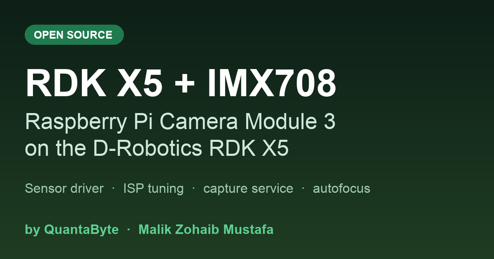

RDK X5 IMX708 driver: the Raspberry Pi Camera Module 3 on the D-Robotics RDK X5
The RDK X5 ships with drivers for a fixed list of camera sensors, and the Sony IMX708 of the Raspberry Pi Camera Module 3 is not one of them. This project adds it: a sensor driver for the X5 camera framework, ISP tuning, a capture service that keeps the camera streaming, and control of the autofocus lens.

What you get
Sensor driver
IMX708 support for the X5 camera framework, built on the board with its own compiler.
ISP tuning
Image processor tuning files, so auto exposure and auto white balance work on the X5 ISP.
Capture service
A small service that keeps the camera streaming and starts at every boot.
Autofocus lens
Drive the Camera Module 3 lens motor (0 to 1023) with a contrast autofocus example.
What works
| 4096 x 2592 at 14 fps (full resolution, centre crop) | works |
| 2304 x 1296 at 30 fps (2x2 binned, whole field of view) | works |
| Auto exposure, auto white balance | works |
| Lens motor, focus position 0 to 1023 | works |
| Autofocus | by the client: example included |
| 4608 x 2592 full sensor width | sensor works; the X5 ISP gives no frames above 4096 wide |
Tested on RDK X5 (8 GB), RDK OS 3.5.0 (Ubuntu 22.04, kernel 6.1.83), hobot-camera 3.1.1, Camera Module 3 standard lens, first CSI connector.
Install
You need the Camera Module 3, the 22-pin to 15-pin ribbon Raspberry Pi sells for the Pi 5 and Zero, and an RDK X5 with internet access for the first build. Push the ribbon fully home at both ends. Then, on the board:
git clone https://github.com/QuantabytePK/rdk-x5-imx708.git
cd rdk-x5-imx708
./install.shThe installer builds the driver and capture service, writes the ISP tuning files and starts the imx708-csi service. Full guide, checks and troubleshooting are in the README.
Common questions
Does the Raspberry Pi Camera Module 3 work on the RDK X5?
Yes, with this driver. Out of the box the RDK X5 does not support the IMX708.
Does autofocus work?
The lens motor is driven from the X5. Focus is found by stepping the lens and measuring sharpness; an example is included.
I get no picture and phy_fatal errors.
Almost always a half-seated ribbon. Power off, re-seat it fully at both ends and try again.
Can I use it with ROS 2?
Stop any other camera node first: only one pipeline can own the CSI connector and the image processor. The README shows how to read frames from your own program.
Made by QuantaByte

Malik Zohaib Mustafa
Founder of QuantaByte. Did the port and the bring-up of the IMX708 on the RDK X5, and published it so it saves others the weeks it took.
QuantaByte
QuantaByte Private Limited builds software and hardware: from embedded vision on boards like the RDK X5 to apps and products. Coding the Future Byte by Byte.